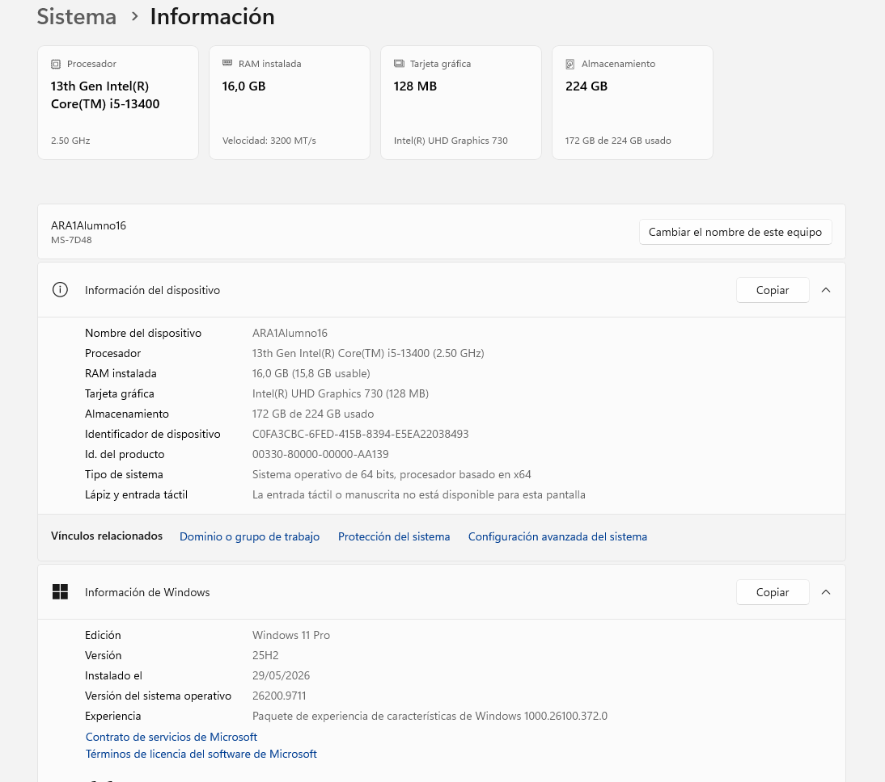

Ficha técnica de mi ordenador
Datos de mi equipo para el inventario del aula.
Ir a los componentes
Cómo he sacado los datos
- Abrí Configuración y fui a Sistema > Acerca de.
- Abrí PowerShell.
-
Ejecuté
Get-CimInstance para el fabricante, el
procesador, la gráfica y el sistema.
- Ejecuté
Get-PhysicalDisk para el disco.

Componentes
- Placa base
- Procesador
- Memoria RAM
- Almacenamiento
- Tarjeta gráfica
- Fabricante de la placa
- Micro-Star International (MSI), modelo MS-7D48
- Procesador
- Intel Core i5-13400 de 13.ª generación
- Memoria RAM
- 16 GB
- Almacenamiento
- SSD Crucial CT240BX500SSD1 de 240 GB
- Tarjeta gráfica
- Intel UHD Graphics 730
- Sistema operativo
- Windows 11 Pro
Más información
Web del fabricante:
MSI